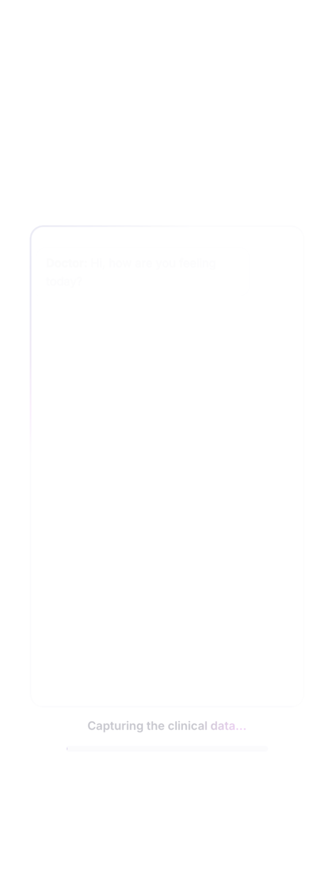
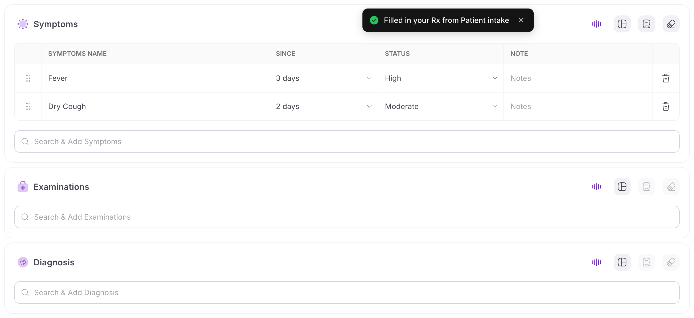
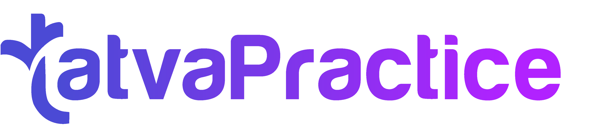

Center: VoiceRx draws letter-by-letter, Playfair italic, slate-900.
Tagline under it: "speak the visit."
type-inslow-breath
VoiceRx
speak the visit.
scene 01 · 0–4s
transition
The italic x of "VoiceRx" un-tucks and stretches horizontally — it becomes the Wispr curve that carries scene 02's hero line in.
02
The hero · real dock wave morphs into real transcript text
★ Make-or-break shot. We start with the real Siri-wave dock (03-dock-with-wave.png) centered. The wave bars then extrude horizontally along the Wispr arc and resolve as the real transcript text from 02-transcript-zone.png flowing along the curve.
Real component A:03-dock-with-wave.png — the actual dock, Submit button, Siri wave, live from app.
Real component B: transcript copy lifted from02-transcript-zone.png ("Patient reports mild fever for two days, no cough…") — typed along the same curve.
Below, ghosted Playfair italic: "speak. the words follow."
transition
The flowing transcript text breaks apart mid-arc; words scatter, then re-gather inside a glass toggle pill — "Two ways to listen" forms from the debris.
03
Two modes · told inside one sentence
No card. The sentence rewrites itself as the glass toggle rocks.
Type-in: "Two ways to listen."
Sentence A: "Speak naturally" — the word Ambient has a live waveform under it; finishes "and I'll catch the whole visit."
Toggle rocks. Sentence B: "Dictate a section" — Dictation carries a blinking cursor; finishes "and only that section fills."
type-rewriteinline-microvizglass-toggle
● Ambient
Dictation
Speak naturally — Ambient ⌇⌇⌇ — and I'll catch the whole visit.
scene 03 · 12–20s
transition
The toggle pill compresses vertically and morphs into the dock geometry — same width, same radius, same shadow. Continuous shape, no cut.
04
The capture · real dock, alone on the canvas
Real 03-dock-with-wave.png alone. Curved Playfair callout whispers "press, and start talking."
Real dock front and center. Wave reacts in time with the beat.
From upper-left, dotted curved arrow with italic Playfair: "press, and start talking →"
Submit CTA isolates and pulses once on the downbeat.
real: dockcurve-callout
scene 04 · 20–26s
transition
The wave bars in the dock unspool upward and become the typed transcript inside the shiner — the shiner literally inherits the wave.
05
Words appear · real shiner, real transcript
Real 04-shiner-loader.png + real 02-transcript-zone.png. Floating on bg, no panel chrome.
Real shiner card floats in center, soft shadow.
Transcript text from the real transcript zone types in on a gentle inner curve.
Italic caption to the right: "cleaned, punctuated, ready."
real: shinerreal: transcriptcurve-echo

cleaned, punctuated, ready.
scene 05 · 26–34s
transition
Whip-pan downward; the shiner text condenses into the "Copy all to RxPad" CTA pill — all those words packed into one button.
06
One tap · real form shimmer-fills
Real 08-copy-shimmer-form.png shows the actual RxPad modules shimmering as text fills. Just the row stack — no surrounding chrome.
Copy CTA isolated above. Tap → real shimmer cascade kicks in.
Real form rows (Symptoms, Examinations, Diagnosis) shimmer-fill left-to-right with the actual app's shimmer animation.
Italic line above stack: "straight into the prescription."
real: copy-shimmer formcascadepayoff

scene 06 · 34–44s · payoff
transition
The filled module rows fade; the "VoiceRx" wordmark rises through them as if the prescription itself is signed in italic.
07
Outro · the brand holds
Same Playfair lockup as 01, now with real TatvaPractice wordmark.
Center: VoiceRx Playfair italic, slate-900.
Eyebrow: BY
Real TatvaPractice wordmark fades in beneath, 56px tall.
holdbrand-lockup
VoiceRx
BY

scene 07 · 44–50s
What changed in v5 (your latest notes)
Real components everywhere. Scenes 02, 04, 05, 06 all use actual PNG captures from capture/realcomps/. No more SVG recreations.
Opening shot is the real Siri-wave dock — not a fake mockup. That wave physically morphs into the real transcript text on the Wispr curve.
Geometry-continuous transitions between every scene — letter → curve, curve → toggle, toggle → dock, wave → text, text → button, button → wordmark. Shown inline between each scene card.
Mic bypass note added for recaptures — the per-module mic still shows the "allow access" banner; on next capture pass, I'll stub getUserMedia + pre-seed scripted transcript so the live wave shows clean.
Before render, your call:
1) The current captures still have some panel-chrome edges (shiner is ~2000px tall). Should I rerun the puppeteer script with tighter component crops + the mic bypass for cleaner real-component shots?
2) BGM placeholder synth or wait for you to drop a track at assets/bgm.mp3?
3) 16:9 first, then 9:16 — or render both in parallel?